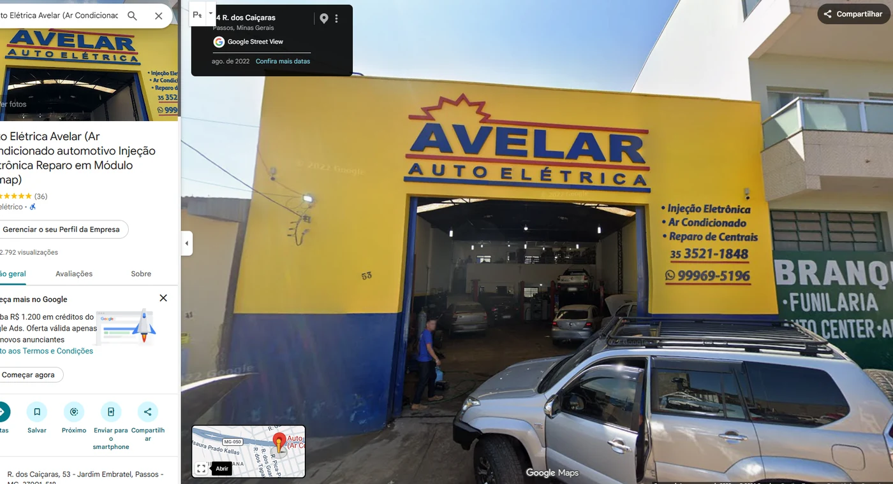

Auto Elétrica Avelar: a entrega digital da Custom Mind.
A Auto Elétrica Avelar atua em Passos–MG com diagnóstico, climatização, injeção eletrônica, módulos, remap e veículos de diferentes categorias. O site precisava apresentar essa variedade sem confundir quem procurava um serviço específico.
Uma necessidade de comunicação concreta.
A comunicação reúne frentes técnicas diferentes. O desenho do site separa serviços e dá a cada demanda uma entrada clara, preservando o diagnóstico como eixo da mensagem.

O que está publicado.
O projeto publicado possui páginas de serviços, uma central de trabalhos com categorias, páginas de atendimentos documentados, contato e informações da região atendida. A estrutura inclui metadados, sitemap e dados estruturados do negócio conforme o próprio site oficial.
As páginas de especialidade funcionam como pontos de entrada; a área de trabalhos conecta exemplos concretos às categorias. O contato fica acessível ao longo da navegação.
Uma experiência que pode ser conferida.
O site oficial permite consultar especialidades e trabalhos reais da oficina em páginas próprias. Esta é uma entrega de estrutura e conteúdo verificável no ar; não atribuímos volume de tráfego ou vendas sem dados publicados.
Para saber mais sobre a empresa ou profissional, acesse a página do cliente. Para ver a entrega diretamente, visite o projeto publicado.